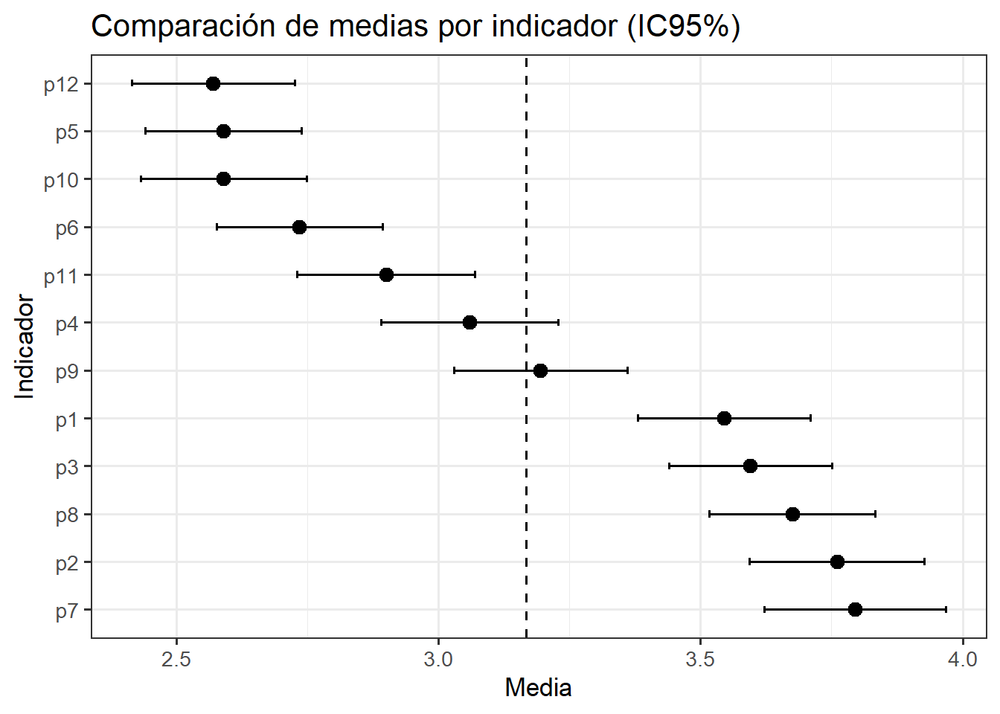
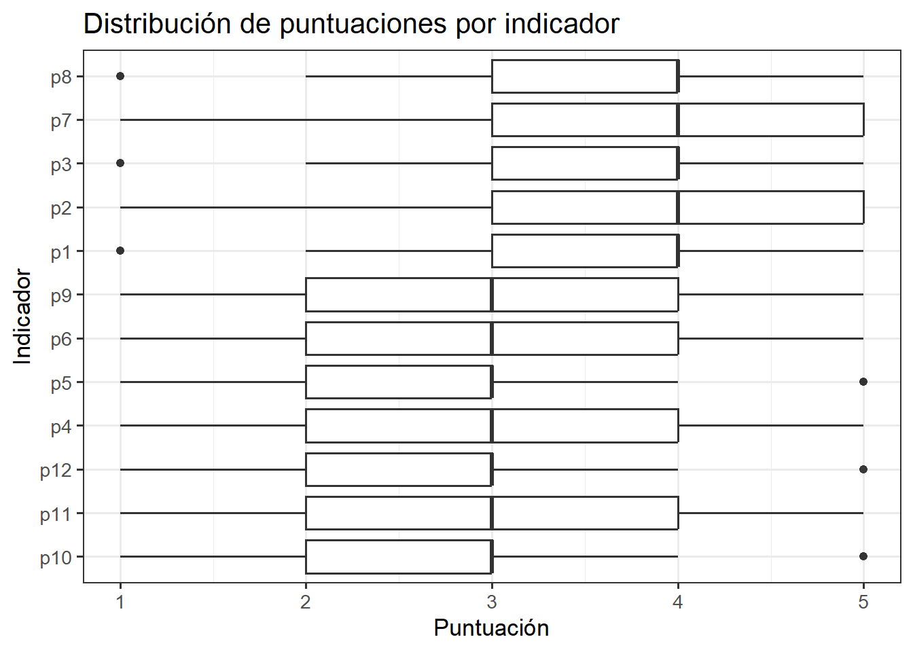
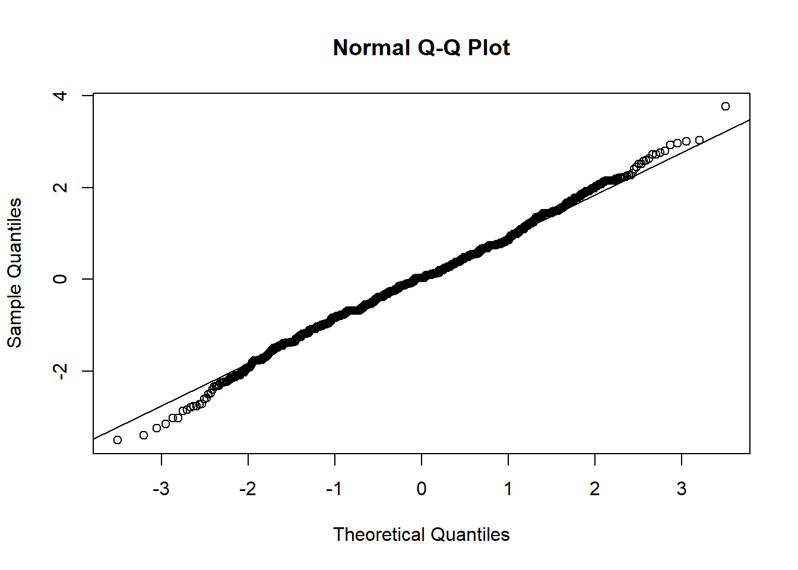

Resumen del ejercicio
Se organizaron los datos y se calcularon descriptivos por cada uno de los 12 indicadores usados en las encuestas a los estudiantes (media, mediana, desviación estándas: de, varianzas: var, intervalos de confianza: IC95%, cuartiles: Q1–Q3 y el índice intercuartílico: IQR), acompañados de dos visualizaciones o figuras: medias con IC95% y boxplots. Dado que los mismos estudiantes respondieron todos los indicadores, se utilizó un ANOVA de medidas repetidas (1 factor, 12 niveles). Se verificó la esfericidad y, ante su violación, se reportó el contraste con correcciones de Greenhouse–Geisser (GG) y Huynh–Feldt (HF). Para identificar entre qué indicadores se presentan diferencias estadísticas, se realizó una prueba post-hoc con t pareadas y ajuste Bonferroni para identificar las parejas de indicadores que difieren. Finalmente, se estimó la potencia a partir del tamaño de efecto observado, para determinar si el tamaño de la muestra es suficiente.
El ANOVA-RM corregido (GG) fue significativo (F(8.09, 1609.26)=53.56, p<0.001), con η²ₚ = 0.212 (efecto grande) y ε_GG ≈ 0.736, evidenciando diferencias reales entre algunos indicadores. La potencia resultó ≈1.00 con n=200 estudiantes; el n mínimo para 80% de potencia fue ≈64 estudiantes bajo esfericidad, confirmando que la muestra es más que suficiente para los objetivos del estudio.
Objetivo
Aplicar estadística descriptiva e inferencial para comparar las puntuaciones de 12 indicadores (P1–P12) evaluados por 200 estudiantes en un diseño de medidas repetidas, e inferir si existen diferencias significativas entre indicadores. Adicionalmente, evaluar la suficiencia muestral mediante un análisis de potencia.
Diseño inferencial a aplicar.
Se aplica un ANOVA de medidas repetidas de 1 factor (12 niveles)
Es una extensión del ANOVA tradicional utilizada cuando un mismo conjunto de individuos es evaluado en varios niveles de una misma variable o en diferentes condiciones experimentales. Este diseño inferencial tiene en cuenta la correlación intrapersonal existente entre las mediciones repetidas de cada estudiante, reduciendo el error experimental y aumentando la potencia estadística. En este ejercicio, el ANOVA-MR permite comparar los valores de los doce indicadores (P1–P12) medidos en los mismos 200 estudiantes, con el propósito de determinar si existen diferencias estadísticamente significativas entre las medias de los indicadores y, por tanto, contrastar la consistencia o variabilidad de las percepciones estudiantiles frente a las distintas dimensiones evaluadas. Este enfoque es el más adecuado dado que las respuestas provienen de los mismos individuos, evitando la violación de la independencia de las observaciones y proporcionando estimaciones más precisas del efecto real del factor “indicador”.
1) Cargar paquetes y datos
Lectura de la base de datos con los indicadores P1–P12 con las puntuaciones por estudiante.
[1] 200[1] 12| estud | indicador | valor |
|---|---|---|
| 1 | p1 | 5 |
| 1 | p10 | 2 |
| 1 | p11 | 2 |
| 1 | p12 | 2 |
| 1 | p2 | 5 |
| 1 | p3 | 5 |
Contexto de la encuesta realizada
En la hoja “Preguntas x indicador” hay una descripción cualitativa de cada indicador. La imprimimos como referencia si se requiere.
| VARIABLE: RECURSOS DIGITALES | ...2 |
|---|---|
| Indicador: Recursos de acceso, búsqueda y gestión de información | -- |
| ¿Aplica la gestión de recursos de acceso y búsqueda con Google (Chrome, Scholar, Book) para combinar las virtuales con las clases presenciales? | 1 |
| ¿Almacena información en herramientas como el Google Drive o Dropbox? | 2 |
| ¿Utiliza de apoyo los videotutoriales para explicación de las clases? | 3 |
| Indicador: Recursos de creación y edición de contenido | -- |
| ¿Dispone de páginas con objeto de aprendizaje como el slideshare o similares? | 4 |
| ¿Emplea el blog educativo como herramienta de clases? | 5 |
| ¿Utiliza herramientas de edición de audio Podcasts para enviar instrucciones o mensajes a los estudiantes? | 6 |
| Indicador: Recursos de interacción y comunicación | -- |
| ¿Se comunica con las redes sociales (Facebook, Instagram, twitter, whatsapp, tik tok) para generar interacción o comunicación con los estudiantes? | 7 |
| ¿Demuestra habilidades en el uso de herramientas de Videoconferencia (Skype, zoom, team, meet)? | 8 |
| ¿Practica el intercambio de información con los estudiantes como el correo electrónico, classroom, mensajería instantánea o similares? | 9 |
| Indicador: Recursos avanzados | -- |
| ¿Utiliza aplicaciones que incluyan inteligencia artificial con responsabilidad? | 10 |
| ¿Conoce las implicaciones de la realidad aumentada? | 11 |
| ¿Plantea situaciones donde se apliquen las funciones de simulaciones en las clases? | 12 |
2) Estadística descriptiva
A continuación se calculan las medidas de tendencia central (media, mediana), posición (Q1, Q3) y dispersión (desviaciones estándar: de, errores estándar: ee, varianzas: var, rango intercuartílico: IQR, máximos y mínimos: min, max, coeficiente de variación: cv). Se incluyen los intervalos de confianza IC del 95% para la media (t-Student).
Descargar la tabla completa en Excel.
| indicador | n | media | mediana | de | var | q1 | q3 | iqr | min | max | cv | ee | tcrit | ic_mín | ic_máx |
|---|---|---|---|---|---|---|---|---|---|---|---|---|---|---|---|
| p1 | 200 | 3.545 | 4 | 1.177 | 1.385 | 3 | 4 | 1 | 1 | 5 | 0.332 | 0.083 | 1.972 | 3.381 | 3.709 |
| p10 | 200 | 2.590 | 3 | 1.135 | 1.288 | 2 | 3 | 1 | 1 | 5 | 0.438 | 0.080 | 1.972 | 2.432 | 2.748 |
| p11 | 200 | 2.900 | 3 | 1.215 | 1.477 | 2 | 4 | 2 | 1 | 5 | 0.419 | 0.086 | 1.972 | 2.731 | 3.069 |
| p12 | 200 | 2.570 | 3 | 1.114 | 1.241 | 2 | 3 | 1 | 1 | 5 | 0.434 | 0.079 | 1.972 | 2.415 | 2.725 |
| p2 | 200 | 3.760 | 4 | 1.191 | 1.419 | 3 | 5 | 2 | 1 | 5 | 0.317 | 0.084 | 1.972 | 3.594 | 3.926 |
| p3 | 200 | 3.595 | 4 | 1.117 | 1.247 | 3 | 4 | 1 | 1 | 5 | 0.311 | 0.079 | 1.972 | 3.439 | 3.751 |
| p4 | 200 | 3.060 | 3 | 1.210 | 1.464 | 2 | 4 | 2 | 1 | 5 | 0.395 | 0.086 | 1.972 | 2.891 | 3.229 |
| p5 | 200 | 2.590 | 3 | 1.067 | 1.138 | 2 | 3 | 1 | 1 | 5 | 0.412 | 0.075 | 1.972 | 2.441 | 2.739 |
| p6 | 200 | 2.735 | 3 | 1.136 | 1.291 | 2 | 4 | 2 | 1 | 5 | 0.415 | 0.080 | 1.972 | 2.577 | 2.893 |
| p7 | 200 | 3.795 | 4 | 1.245 | 1.551 | 3 | 5 | 2 | 1 | 5 | 0.328 | 0.088 | 1.972 | 3.621 | 3.969 |
| p8 | 200 | 3.675 | 4 | 1.138 | 1.296 | 3 | 4 | 1 | 1 | 5 | 0.310 | 0.080 | 1.972 | 3.516 | 3.834 |
| p9 | 200 | 3.195 | 3 | 1.189 | 1.414 | 2 | 4 | 2 | 1 | 5 | 0.372 | 0.084 | 1.972 | 3.029 | 3.361 |
Figura 1. Medias con IC95% (ordenadas)

La figura ordena a los los indicadores de mayor a menor media (de abajo hacia arriba). Se observa un patrón bimodal claro: p7, p2 y p8 presentan las medias más altas (≈3.9–3.6), seguidos por p3, p1 y p9, todos a la derecha de la media global (línea discontinua, ~3.15). Por debajo del promedio se ubican p4 (cercano al umbral) y, con valores menores, p11, p6, p10, p5 y p12 (≈3.0–2.5). Los IC al 95% son relativamente estrechos y hay poca superposición entre el bloque alto (p7–p1–p9) y el bloque bajo (p4–p12), lo que sugiere diferencias entre indicadores; no obstante, la conclusión de significancia debe basarse en el ANOVA de medidas repetidas y sus post-hoc pareados, no solo en la inspección visual de los intervalos.
Figura 2. Boxplot por indicador

El diagrama de cajas muestra la variabilidad y simetría de cada indicador y confirma el patrón visto en la figura anterior de la comparación de medias: los indicadores con cajas desplazadas hacia valores altos (≈3–4) concentran respuestas favorables (p.ej., p7, p8, p2), mientras que aquellos con cajas centradas en ≈2–3 exhiben valoraciones comparativamente menores (p.ej., p10, p1). La altura de las cajas (IQR) es similar en varios indicadores, lo que sugiere variabilidad comparable, aunque se observan valores atípicos en los extremos (1 y 5) en varios casos. La superposición de cajas entre bloques altos y bajos es limitada, lo que sugiere diferencias consistentes; sin embargo, la significancia debe confirmarse con el ANOVA de medidas repetidas y los post-hoc pareados.
3) ANOVA de medidas repetidas (1 factor, 12 niveles)
Se verifica la esfericidad (Mauchly) y, si se viola, reportamos correcciones de Greenhouse–Geisser (GG) y Huynh–Feldt (HF). También calculamos eta² parcial y hacemos post-hoc con pruebas t pareadas y ajuste de p (Bonferroni).
ANOVA Table (type III tests)
Effect DFn DFd F p p<.05 pes
1 indicador 8.09 1609.26 53.56 5.16e-78 * 0.212ANOVA (salida principal). La tabla type III muestra que el factor indicador es altamente significativo con F(8.09, 1609.26)=53.56, p≈5.16×10⁻⁷⁸ y η²ₚ=0.212 (efecto grande). Los grados de libertad fraccionarios indican que se aplicó una corrección por esfericidad (r ≈ 0.74 del df teórico 11), por lo que el contraste ya está ajustado y respalda diferencias claras entre los 12 indicadores medidos en los estudiantes.
| correccion | Effect | DFn | DFd | F | p | pes | eps |
|---|---|---|---|---|---|---|---|
| none | indicador | 11.00 | 2189 | 53.56 | 0 | 0.212 | NA |
| GG | indicador | 8.09 | 1609 | 53.56 | 0 | 0.212 | 0.7355 |
| HF | indicador | 8.46 | 1684 | 53.56 | 0 | 0.212 | 0.7691 |
GG y HF son correcciones de esfericidad para ANOVA de medidas repetidas:
Esfericidad: suposición de que las varianzas de las diferencias entre todos los pares de niveles del factor dentro-sujeto son iguales. Si la prueba Mauchly es significativa → la esfericidad es violada.
Qué hacen: ajustan (reducen) los grados de libertad multiplicándolos por un factor ε (épsilon), con lo cual el p-value se vuelve más conservador.
GG (Greenhouse–Geisser): más conservadora; tiende a subestimar ε, reduce más los df.
HF (Huynh–Feldt): menos conservadora; sobre-corrige menos (df algo mayores). Osea que es má estricta con la esfericidad.
Aquí se ve el contraste sin corrección (DFn=11, DFd=2189) y las versiones corregidas: GG con ε≈0.736 (DFn=8.09, DFd=1609) y HF con ε≈0.769 (DFn=8.46, DFd=1684). En las tres, F=53.56 y el valor-p es esencialmente <0.001 (aparece 0 por redondeo). Dado que ε<1, la esfericidad se viola; por prudencia reporta el resultado con GG (más conservador) y puedes añadir HF en anexo. Una forma de reporte: “ANOVA-RM (GG): F(8.09, 1609.26)=53.56, p<0.001, η²ₚ=0.212, ε_GG=0.736.”
NOTA: En este ANOVA-MR o de medidas repetidas con 1 grupo (los mismos 200 estudiantes valoran los índicadores P1 a P12), la condición crítica y específica del diseño es la esfericidad. Esto se debe a que en medidas repetidas con >2 niveles (este caso: 12), el estadístico F de dentro-de-estudiantes solo es válido si las varianzas de todas las diferencias por pares de niveles son iguales: eso es la esfericidad (homogeneidad de varianzas y covarianzas). Los demás requisitos de este anova quedan así:
Independencia: se exige entre sujetos (cada estudiante es independiente). Dentro del sujeto hay correlación por diseño; eso no viola el modelo, se modela justamente con el ANOVA-RM.
Homogeneidad de varianzas: la versión “entre grupos” no aplica porque no hay grupos independientes (ng = 1). En RM, la condición análoga es la esfericidad (igualdad de varianzas de las diferencias y de ciertas covarianzas). Por eso probamos/ajustamos GG/HF.
Normalidad: el ANOVA-RM asume normalidad (de residuos / multivar.). Con n = 200, el test es bastante robusto a desviaciones moderadas (CLT). Aun así, puedes verificarla (QQ-plot de residuos) y, si hay dudas fuertes (p. ej., datos muy discretos tipo Likert), complementar con Friedman/ART o con modelos mixtos.

3.1 Post-hoc (pareados dentro de sujeto)
Descargar la tabla completa en Excel.
| .y. | group1 | group2 | n1 | n2 | statistic | df | p | p.adj | p.adj.signif |
|---|---|---|---|---|---|---|---|---|---|
| valor | p1 | p10 | 200 | 200 | 10.293295 | 199 | 0.0e+00 | 0.00e+00 | **** |
| valor | p1 | p11 | 200 | 200 | 5.886816 | 199 | 0.0e+00 | 1.10e-06 | **** |
| valor | p1 | p12 | 200 | 200 | 10.725825 | 199 | 0.0e+00 | 0.00e+00 | **** |
| valor | p1 | p2 | 200 | 200 | -2.555313 | 199 | 1.1e-02 | 7.52e-01 | ns |
| valor | p1 | p3 | 200 | 200 | -0.554593 | 199 | 5.8e-01 | 1.00e+00 | ns |
| valor | p1 | p4 | 200 | 200 | 5.071769 | 199 | 9.0e-07 | 5.94e-05 | **** |
Interpretación (plantilla): Si
pparaindicadores < 0.05, se concluye que existen diferencias entre las medias de al menos dos indicadores. Simauchly_p< 0.05 (esfericidad violada), se prefiere reportar el valorpcon corrección GG como se verá más adelante y el tamaño de efectoeta2[partial](grande ~ 0.14).
4) Potencia estadística (tamaño muestral)
Para medidas repetidas de 1 factor, la potencia depende del tamaño del efecto (Cohen f), el número de sujetos (n), el número de niveles (k = 12), la correlación media entre medidas y la esfericidad. Se usa:
- Estimación de f a partir de
eta2[partial]:
\(f = \sqrt{\eta^2_p / (1 - \eta^2_p)}\). - Correlación promedio entre P1–P12 (informativa).
| n_subj | k_levels | eta_p2 | f | r_promedio |
|---|---|---|---|---|
| 200 | 12 | 0.212 | 0.5187 | 0.3442 |
| df_num | df_den | potencia_aprox | n_requerido_80 |
|---|---|---|---|
| 11 | 2189 | 1 | 64 |
Tabla 1: Parámetros para potencia. Con n = 200 y k = 12 niveles dentro de sujeto, el tamaño de efecto observado es η²ₚ = 0.212 (grande; umbrales típicos: 0.01/0.06/0.14) y su equivalente Cohen’s f ≈ 0.519. La correlación promedio entre mediciones (r ≈ 0.34) indica dependencia moderada dentro de sujeto, lo que suele mejorar la eficiencia del ANOVA-RM (reduce error residual). En conjunto, estos parámetros anticipan diferencias claras entre indicadores y alta potencia para detectarlas.
Tabla 2: Potencia aproximada (asumiendo esfericidad). Con df_num = 11 y df_den = 2189, la potencia ≈ 1.00 (prácticamente 100%) y el n requerido para 80% de potencia es ≈ 64 sujetos; es decir, esta muestra de 200 estudiantes está muy por encima de lo necesario bajo este supuesto.
Nota: si la esfericidad se viola (ε < 1), los df efectivos bajan y el cálculo anterior es optimista; aun así, con el tamaño de efecto grande observado y n = 200, la potencia seguiría siendo muy alta y las conclusiones robustas.
5) Conclusiones (resumen ejecutivo)
Objetivo cumplido. Con 200 estudiantes y 12 indicadores (P1–P12) medidos en los mismos sujetos, aplicamos estadística descriptiva (medias, IC95%, mediana, IQR) para entender tendencias y dispersión, y ANOVA de medidas repetidas para probar diferencias entre indicadores.
Lo que dicen los descriptivos. Las medias con IC95% y los boxplots muestran heterogeneidad real entre indicadores: algunos se concentran por encima del promedio global, otros por debajo, con variabilidad comparable (IQR) y algunos atípicos esperables en escalas tipo Likert.
Prueba de diferencias (ANOVA-RM). El contraste dentro de sujeto es significativo:
ANOVA-RM corregido (GG) → F(8.09, 1609.26) = 53.56, p < 0.001, η²ₚ = 0.212 (efecto grande).
Se violó la esfericidad, por eso reportamos el resultado con corrección GG (prudente); HF es similar y puede añadirse como referencia.Qué significa para los 12 indicadores. Hay diferencias reales entre las medias. Las figuras sugieren un bloque alto (p.ej., P7, P2, P8) versus un bloque bajo (p.ej., P10, P5, P12); la confirmación exacta de qué pares difieren proviene de las comparaciones pareadas con Bonferroni (tabla post-hoc).
Magnitud del efecto. η²ₚ ≈ 0.21 indica que una porción sustantiva de la variación de las puntuaciones se explica por el indicador (no solo por ruido de medición). Esto respalda diferencias con sentido práctico, además de ser estadísticamente significativas.
Potencia y suficiencia muestral. Con el efecto observado (f ≈ 0.52) y n = 200, la potencia ≈ 1.00; el n mínimo para 80% de potencia (bajo esfericidad) es ≈ 64. Tu muestra es más que suficiente para detectar las diferencias planteadas.
Finalmente, los descriptivos y la inferencia con el ANOVA-RM convergen: los 12 indicadores no son equivalentes en su nivel medio en esta cohorte; las diferencias son estadística y prácticamente relevantes, y el tamaño muestral garantiza conclusiones robustas para este objetivo.
Cómo reportar estos resultados.
Citar el ANOVA-RM (GG) con F, df, p, η²ₚ y ε_GG.
Mostrar las medias con IC95% y boxplots por indicador.
Incluir la tabla completa de post-hoc (Bonferroni) y destaca los pares con diferencias.
Añadir una nota metodológica breve sobre esfericidad y por qué se usa GG.